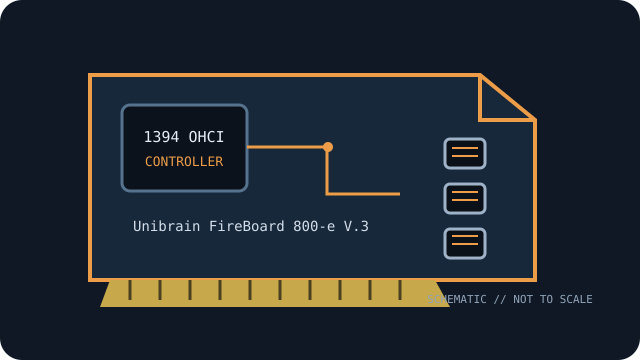

[ IEEE 1394 CONTROLLER // EXPANSION CARDS ]
Unibrain FireBoard 800-e V.3
Two-port PCIe IEEE 1394b controller with bilingual 9-pin FireWire 800 ports. Verify the exact board label and revision before service.

MODEL SCOPE: Unibrain FireBoard 800-e V.3. Specification distinctions below identify 1394a/1394b rates, physical bus and power limitations; host OS and driver support can change by revision and release.
Specifications and compatibility
| Exact model / SKU | Unibrain FireBoard 800-e V.3 bulk part 1233; hardware FireAPI/Fire-i SDK-license part 1724. |
|---|---|
| Controller chipset | Texas Instruments XIO2213B IEEE 1394 controller (Unibrain product specification). |
| PCI bus / lanes | PCI Express x1. |
| IEEE 1394a rate | Bilingual ports support IEEE 1394a / FireWire 400 at 100/200/400 Mb/s with compatible devices/cables. |
| IEEE 1394b rate | IEEE 1394b / FireWire 800, up to 800 Mb/s. |
| Ports and connectors | Two external bilingual 9-pin IEEE 1394b ports. |
| Power / bus-power notes | The cited product page does not specify external auxiliary card power or a per-port current limit. 9-pin ports may provide bus power subject to card revision and host supply; confirm before powering peripherals from the bus. |
| OS driver compatibility | Unibrain lists Windows 7/8/10, macOS 10.4+ and Linux. These legacy OS claims are not guarantees for current releases; confirm OHCI driver and application support for the intended system. |
| Host compatibility | PCI Express x1 host slot. Confirm 9-pin bilingual cabling for 1394a equipment, bracket/clearance and OS support; physical PCI fit does not substitute for an x1 PCIe interface. |
Installation and archival notes
- Match the card’s printed model/revision and connector layout to the cited maker documentation; do not infer a controller IC or current limit from the connector alone.
- IEEE 1394 link rate is negotiated with the peripheral and cable. A FireWire 800 connector does not make a 400-Mb/s device or cable operate at 800 Mb/s.
- Use ESD precautions; validate system bus wiring, driver version, peripheral power source, and application-level compatibility before replacing a working legacy host.
Manufacturer and standards sources
- Unibrain — FireBoard 800-e V.3 1394b PCI Express adapterManufacturer product reference for the named part; check the specific board revision and documentation availability.
- Unibrain Store — FireBoard 800-e V.3 referenceAdditional maker documentation or official model-family reference.
- IEEE — IEEE 1394-2008 standardIEEE 1394 bus/protocol standard reference; card-level details are in the manufacturer documentation.
- Linux kernel — FireWire subsystem documentationOHCI/FireWire software-driver reference; platform-specific support remains OS-release dependent.